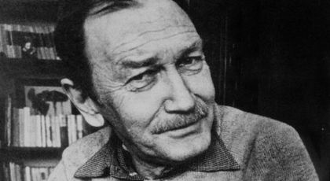

Geyikli Gece

Halbuki korkulacak hiçbir şey yoktu ortalıkta Her şey naylondandı o kadar Ve ölünce beş on bin birden ölüyorduk güneşe karşı. Ama geyikli geceyi bulmadan önce Hepimiz çocuklar gibi korkuyorduk Geyikli geceyi hep bilmelisiniz Yeşil ve yabani uzak ormanlarda Güneşin asfalt sonlarında batmasıyla ağırdan Hepimizi vakitten kurtaracak Bir yandan, toprağı sürdük Bir yandan kaybolduk Gladyatörlerden ve dişlilerden Ve büyük şehirlerden Gizleyerek yahut döğüşerek Geyikli geceyi kurtardık Evet kimsesizdik ama umudumuz vardı Üç ev görsek bir şehir sanıyorduk Üç güvercin görsek Meksika geliyordu aklımıza Caddelerde gezmekten hoşlanıyorduk akşamları Kadınların kocalarını aramasını seviyorduk Sonra şarap içiyorduk kırmızı yahut beyaz Bilir bilmez geyikli gece yüzünden Geyikli gecenin arkası ağaç Ayağının suya değdiği yerde bir gökyüzü Çatal boynuzlarında soğuk ayışığı İster istemez aşkları hatırlatır Eskiden güzel kadınlar ve aşklar olmuş Şimdi de var biliyorum Bir seviniyorum düşündükçe bilseniz Dağlarda geyikli gecelerin en güzeli Hiçbir şey umurumda değil diyorum Aşktan ve umuttan başka Bir anda üç kadeh ve üç yeni şarkı Belleğimde tüylü tüylü geyikli gece duruyor. Biliyorum gemiler götüremez Neonlar ve teoriler ışıtamaz yanını yöresini Örneğin Manastırda oturur içerdik iki kişi Ya da yatakta sevişirdik bir kadın bir erkek Öpüşlerimiz gitgide ısınırdı Koltukaltlarımız gitgide tatlı gelirdi Geyikli gecenin karanlığında Aldatıldığımız önemli değildi yoksa Herkesin unuttuğunu biz hatırlamasak Gümüş semaverleri ve eski şeyleri Salt yadsımak için sevmiyorduk Kötüydük de ondan mı diyeceksiniz Ne iyiydik ne kötüydük Durumumuz başta ve sonda ayrı ayrıysa Başta ve sonda ayrı olduğumuzdandı Ama ne varsa geyikli gecede idi Bir bilseniz avuçlarmız terlerdi heyecandan Bir bakıyorduk akşam oluyordu kaldırımlarda Kesme avizelerde ve çıplak kadın omuzlarında Büyük otellerin önünde garipsiyorduk Çaresizliğimiz böylesine kolaydı işte Hüznümüzü büyük şeylerden sanırsanız yanılırsınız Örneğin üç bardak şarap içsek kurtulurduk Yahut bir adam bıçaklasak Yahut sokaklara tükürsek Ama en iyisi çeker giderdik Gider geyikli gecede uyurduk Geyiğin gözleri pırıl pırıl gecede İmdat ateşleri gibi ürkek telaşlı Sultan hançerIeri gibi ayışığında Bir yanında üstüste üstüste kayalar Öbür yanında ben Ama siz zavallısınız ben de zavallıyım Eskimiş şeylerle avunamıyoruz Domino taşları ve soğuk ikindiler Çiçekli elbiseleriyle yabancı kalabalık Gölgemiz tortop ayakucumuzda Sevinsek de sonunu biliyoruz Borçları kefilleri ve bonoları unutuyorum İkramiyeler bensiz çekiliyor dünyada Daha ilk oturumda suçsuz çıkıyorum Oturup esmer bir kadını kendim için yıkıyorum İyice kurulamıyorum saçlarını Bir bardak şarabı kendim için içiyorum Halbuki geyikli gece ormanda Keskin mavi ve hışırtılı Geyikli geceye geçiyorum Uzanıp kendi yanaklarımdan öpüyorum.